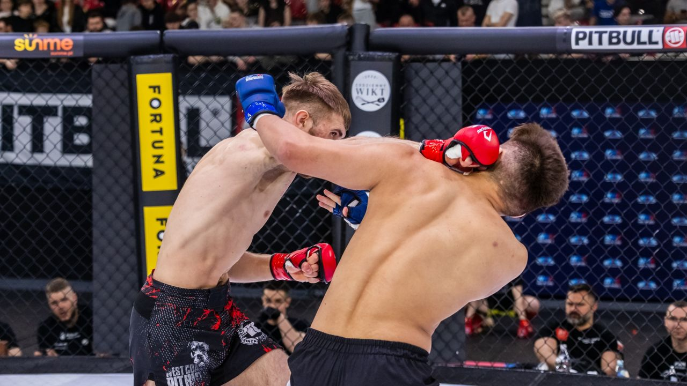

MMA
MMA (Mixed Martial Arts) to sport walki łączący wiele technik z różnych sztuk walki, takich jak boks, kickboxing, judo, zapasy czy brazylijskie jiu-jitsu. Zawodnicy rywalizują zarówno w stójce, jak i w parterze, wykorzystując uderzenia, kopnięcia oraz chwyty. MMA jest jednym z najpopularniejszych sportów walki na świecie i wymaga ogromnej wytrzymałości fizycznej oraz psychicznej.

- Rodzaje walk w MMA
-
- stójka – walka oparta głównie na ciosach rękami i nogami,
- parter – walka na ziemi z użyciem dźwigni i duszeń,
- clinch – walka w zwarciu przy użyciu chwytów oraz kolan.
Ciekawostki
Pierwsze nowoczesne gale MMA stały się popularne dzięki organizacji UFC. W MMA zawodnicy trenują wiele dyscyplin jednocześnie, aby być wszechstronnymi. Najsłynniejszym polskim zawodnikiem MMA jest Mamed Khalidov, a na świecie ogromną popularność zdobył Conor McGregor.